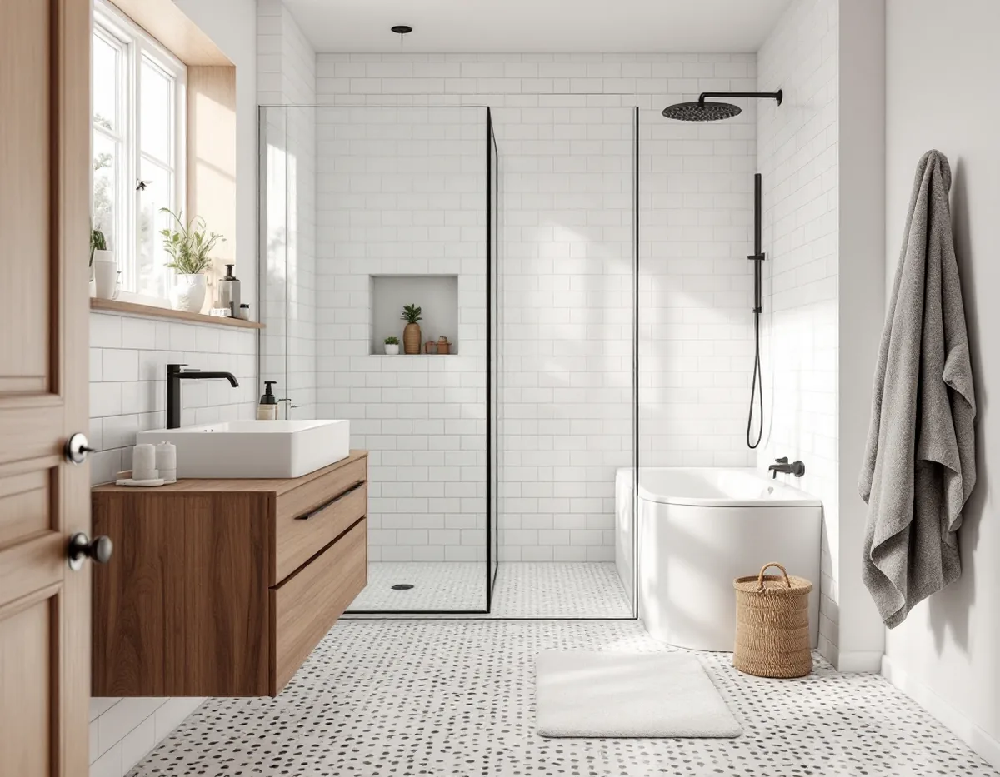
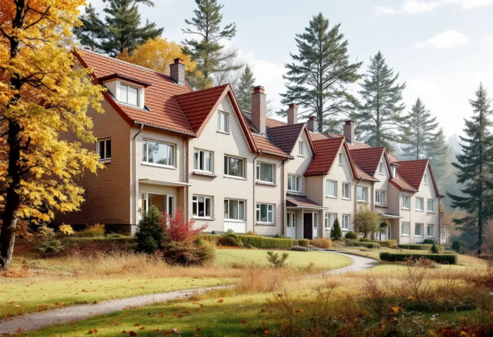

Platsbesök
Vi ser badrummet, golvbrunnen och var huset ansluter till kommunens ledningar.
Badrumsrenovering i Järfälla gäller ofta radhus och kedjehus som byggfirmorna uppförde i serier från 1945 och in på 1960-talet. Vi river, kontrollerar avlopp och underlag, bygger upp tätskikt och ytskikt och låter behöriga installatörer göra VVS och el – med ROT-avdraget direkt på fakturan.

Järfällas kulturmiljöplan beskriver många småhusområden som byggdes i ett svep av en och samma firma. I Kallhäll lät Bolinders uppföra radhus åt sina anställda längs Bolindervägen från 1945. I Jakobsberg började Widmark & Platzer bygga Ekedalsområdet 1958, och samma firma står bakom kedjehusen vid Dressyrvägen och villorna vid Stålringen. Grändvillorna vid Hovvägen, byggda i souterräng, kom omkring 1960.
För badrummet betyder det att husen i ett område ofta är byggda med samma planlösning och samma material. Ett badrum från 1960- eller 70-talet som inte byggts om har i regel både tätskikt, golvbrunn och rör från samma tid. Har det renoverats en gång kan det ändå finnas gamla delar kvar under det nya, till exempel en äldre brunn under ny klinker.
Det finns också undantag. Lund vid Mälaren är kommunens äldsta fritidshusområde, med enkla trähus från 1900-talets början. Där kan ett badrum behöva byggas upp från grunden i ett hus som inte var tänkt för åretruntboende.

I Ekedal finns souterrängradhus, där nedre planet ligger delvis i backen. Ett badrum i det planet har ofta golv direkt på betong mot mark och en eller flera väggar mot jord. Där räcker det inte att bara tänka på vattnet från duschen; fukt kan också komma från marken. Innan nytt tätskikt läggs undersöker vi därför underlaget och om det finns tecken på markfukt.
Ligger badrummet på övervåningen i ett tvåplans radhus är frågan i stället bjälklaget och hur frånluften går ut. I kedjehusen kan garaget mellan husen ge möjlighet till en ny dragning, men det avgörs av hur huset faktiskt är byggt.
Terrängen spelar in även på andra håll. I Bolinderbyn i Kallhäll står radhusen i 21 längor, och i Ekedal ligger radhuslängorna i den lägre delen och villorna högre upp i backen. Hur huset ligger i slänten avgör var badrummet kan placeras och hur avloppet når ut. Ska badrummet flyttas upp eller ner en våning påverkar det både fallet på avloppet och var frånluften kan dras, och det är ofta där en ytskiktsrenovering blir ett större projekt som kan behöva anmälas.
I en villa eller ett eget radhus i Järfälla äger du ledningarna från förbindelsepunkten, som enligt kommunen normalt ligger vid eller strax utanför tomtgränsen. Det betyder att reparationer vid läckor, åtgärder vid avloppsstopp och underhåll av ledningar och ventiler inne på tomten är ditt ansvar. När badrummet ändå är rivet är det ett bra tillfälle att se över avloppet ut mot gatan.
Järfälla kommun kräver anmälan om du installerar eller väsentligt ändrar vatten och avlopp, till exempel när stammar dras i nya lägen. Du måste vänta på startbesked innan arbetet börjar, och en kontrollplan ska lämnas in. Kommunen räknar med beslut inom fyra veckor efter att alla handlingar kommit in. Är du osäker på om ändringen är tillräckligt stor vill kommunen att du hör av dig innan arbetet börjar.
Bor du i en bostadsrätt, till exempel i ett flerbostadshus i Jakobsberg eller Barkarby, är det bostadsrättslagen som styr: utan styrelsens tillstånd får du inte ändra ledningar för vatten och avlopp, ändra ventilationen eller göra ingrepp i bärande konstruktion. Ta reda på föreningens regler för våtrum innan du begär kostnadsförslag, och om stammarna nyligen bytts eller ska bytas.
Tätskiktet ska utföras enligt branschregler, som GVK:s Säkra Våtrum eller Byggkeramikrådets regler, och VVS-arbetet enligt Säker Vattens branschregler. Det är dokumentationen därifrån som föreningen brukar vilja se. Mer om helheten finns under badrumsrenovering i Stockholm, och om taket också behöver ses över finns takrenovering i Järfälla.
Vi ser badrummet, golvbrunnen och var huset ansluter till kommunens ledningar.
Flyttas stammar eller ändras ventilationen hjälper vi dig att ta fram underlag till kommunen.
Du får ett skriftligt förslag där arbete och material står separat.
Rummet rivs, och i souterrängplan kontrolleras golv och väggar mot mark.
Installatörerna drar nytt, golvet byggs med fall och tätskiktet läggs enligt branschregler.
Kakel, klinker och porslin monteras, och du får egenkontroll och skötselråd.
Rotavdraget är 30 procent av arbetskostnaden, högst 50 000 kronor per person och år och högst 75 000 kronor ihop med rutavdrag. I ett småhus räknar Skatteverket bland annat plattsättning, rivning av väggar och dragning av vatten- och avloppsledningar som rotarbete. Material och resor ingår inte, och vi drar avdraget direkt på fakturan.
I bostadsrätt gäller avdraget bara arbete inne i lägenheten, och enligt Skatteverket inte stambyte eller flytt av golvbrunn.
Det som oftast styr är skicket på underlaget och avloppet, om något ska flyttas och om rummet ligger mot mark i ett souterrängplan. Ytskikt, golvvärme och inredning kommer sedan. Besöket är kostnadsfritt och du får ett skriftligt kostnadsförslag innan något beställs.
Tätskikt, golvbrunn, el, VVS och intyg.
Badrumsrenovering i Stockholm →Takbyte, takbesiktning och plåtarbeten.
Takläggare i Järfälla →Jakobsberg, Viksjö och Kallhäll.
Takrenovering i Järfälla →Planbesked, extra bostad och ansvar.
Byggföretag i Järfälla →Underhållsmålning i rätt tid.
Fasadmålning i Järfälla →Kedjehus, sekelskiftesvillor och parstuga i Stäket.
Fasadrenovering i Järfälla →Bruksvillor, radhus och 70-talsfönster i Järfälla.
Fönsterbyte i Järfälla →Kedjehus, egnahem och gamla golvskikt.
Golvläggare i Järfälla →Slipa och behandla trappan i huset.
Golvslipning i Järfälla →Kedjehus, radhus och souterräng.
Köksrenovering i Järfälla →Stuprör, skärmtak och plåttak i Järfälla.
Plåtslagare i Järfälla →Förgårdar, förråd och ytterdörrar.
Snickare i Järfälla →Ny tapet på skivväggar i radhus.
Tapetsering i Järfälla →